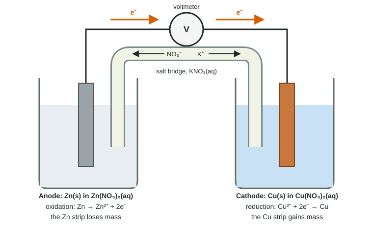

Galvanic (Voltaic) and Electrolytic Cells
An electrochemical cell separates oxidation (at the anode) from reduction (at the cathode), so electrons flow through a wire from anode to cathode while ions move through a salt bridge.
Part 1 · Hook
Why this matters
Part 2 · Before you start
What this builds on
Part 3 · Prerequisite check
Quick check before you start
1. In Zn(s) + Cu²⁺(aq) → Zn²⁺(aq) + Cu(s), which species is reduced?
- Cu²⁺
- Zn
- Zn²⁺
- Cu
Show the answer
Cu²⁺ gains two electrons and its oxidation number falls from +2 to 0.
- Correct: Cu²⁺:
- Zn:
- Zn²⁺:
- Cu:
2. What is a half-reaction?
- The oxidation or the reduction part of a redox reaction, shown with electrons
- A reaction that goes halfway to completion
- A reaction with half the usual coefficients
- A reaction between two ions
Show the answer
A half-reaction shows the electrons lost (oxidation) or gained (reduction).
- Correct: The oxidation or the reduction part of a redox reaction, shown with electrons:
- A reaction that goes halfway to completion:
- A reaction with half the usual coefficients:
- A reaction between two ions:
3. What can drive a process that has ΔG° > 0?
- Outside energy such as an electric current
- A catalyst
- Waiting longer
- Lowering the temperature
Show the answer
An unfavored process needs a free energy source: a coupled reaction or outside energy.
- Correct: Outside energy such as an electric current:
- A catalyst:
- Waiting longer:
- Lowering the temperature:
Part 4 · See it
See it first

Part 5 · Step by step
How it works, step by step
- A favored redox reaction is split into two half-cells joined by a wireelectrons released by oxidation at the anode must travel through the wire to the cathode
- The anode compartment gains cations and the cathode compartment loses themions move through the salt bridge to keep each compartment neutral
- Electrons flow through the external circuitthe free energy of the reaction does electrical work: a galvanic cell
- An outside power supply pushes electrons the other wayan unfavored reaction is driven: an electrolytic cell
Part 6 · Key ideas
Key ideas
- Oxidation at the anode, reduction at the cathode, in every cell. Electrons flow through the wire from anode to cathode.
- A galvanic (voltaic) cell runs a thermodynamically favored reaction and produces a current.
- An electrolytic cell uses an outside power supply to drive a reaction that is not favored.
- The salt bridge carries ions, not electrons: anions toward the anode, cations toward the cathode, keeping each side neutral.
- Evidence from a cell: the anode metal loses mass; metal plates onto the cathode.
Part 7 · Misconception
A common mistake
The wrong idea: Electrons travel through the salt bridge from one beaker to the other.
What actually happens: Electrons travel only through the wire, from anode to cathode. The salt bridge carries ions: anions move toward the anode compartment and cations toward the cathode compartment, which keeps both electrically neutral.
Part 8 · Check yourself
Check yourself
Exam-style questions. Anything you miss goes into your review queue.
Model
An iron-silver cell
A student builds the cell below. Beaker 1 holds an iron strip in 1.0 M Fe(NO₃)₂; Beaker 2 holds a silver strip in 1.0 M AgNO₃. The strips are joined by a wire through a voltmeter, and the beakers by a salt bridge of KNO₃(aq). The voltmeter shows a steady reading. After an hour the silver strip has gained mass and the iron strip has lost mass.
1. Which strip is the anode, and which process happens there?
- The silver strip, where Ag⁺(aq) is reduced to Ag(s)
- The iron strip, where Fe(s) is oxidized to Fe²⁺(aq)
- The iron strip, where Fe²⁺(aq) is reduced to Fe(s)
- The silver strip, where Ag(s) is oxidized to Ag⁺(aq)
Show the answer
Oxidation happens at the anode. The iron strip loses mass because Fe(s) → Fe²⁺(aq) + 2e⁻ there.
- The silver strip, where Ag⁺(aq) is reduced to Ag(s): This is the right process for the silver strip, but reduction happens at the cathode, not the anode.
- Correct: The iron strip, where Fe(s) is oxidized to Fe²⁺(aq): Right: the iron loses mass as Fe atoms lose electrons and enter the solution as ions. Oxidation happens at the anode.
- The iron strip, where Fe²⁺(aq) is reduced to Fe(s): If Fe²⁺ were reduced, the iron strip would gain mass. It loses mass, so iron is oxidized.
- The silver strip, where Ag(s) is oxidized to Ag⁺(aq): If silver were oxidized, the silver strip would lose mass. It gains mass.
2. Which is the balanced net ionic equation for the reaction in the cell?
- Fe(s) + Ag⁺(aq) → Fe²⁺(aq) + Ag(s)
- Fe²⁺(aq) + 2 Ag(s) → Fe(s) + 2 Ag⁺(aq)
- Fe(s) + 2 AgNO₃(aq) → Fe(NO₃)₂(aq) + 2 Ag(s)
- Fe(s) + 2 Ag⁺(aq) → Fe²⁺(aq) + 2 Ag(s)
Show the answer
Oxidation: Fe → Fe²⁺ + 2e⁻. Reduction: Ag⁺ + e⁻ → Ag, doubled to use both electrons. Adding gives Fe + 2 Ag⁺ → Fe²⁺ + 2 Ag.
- Fe(s) + Ag⁺(aq) → Fe²⁺(aq) + Ag(s): Atoms balance but charge does not: +1 on the left, +2 on the right. Each Fe gives two electrons, enough for two Ag⁺.
- Fe²⁺(aq) + 2 Ag(s) → Fe(s) + 2 Ag⁺(aq): This is the reverse reaction: it would plate iron and dissolve silver, the opposite of what was observed.
- Fe(s) + 2 AgNO₃(aq) → Fe(NO₃)₂(aq) + 2 Ag(s): This is a molecular equation; nitrate is a spectator ion and does not appear in the net ionic equation.
- Correct: Fe(s) + 2 Ag⁺(aq) → Fe²⁺(aq) + 2 Ag(s): Right: two Ag⁺ are reduced for each Fe oxidized, so electrons (2) and charge (+2 on each side) balance.
3. In which direction do electrons flow through the wire?
- From the iron strip to the silver strip
- From the silver strip to the iron strip
- Through the salt bridge from Beaker 1 to Beaker 2
- They stay put; ions alone move in a cell
Show the answer
Electrons are released at the anode (iron) and flow through the external wire to the cathode (silver).
- Correct: From the iron strip to the silver strip: Right: electrons leave the anode, where iron is oxidized, and travel to the cathode, where Ag⁺ is reduced.
- From the silver strip to the iron strip: Electrons flow from where they are released (oxidation, iron) to where they are used (reduction, silver).
- Through the salt bridge from Beaker 1 to Beaker 2: Electrons travel through the wire; the salt bridge carries ions, not electrons.
- They stay put; ions alone move in a cell: Electrons flowing through the wire are the current that the voltmeter detects.
4. As the cell runs, which way do K⁺ and NO₃⁻ ions move out of the salt bridge?
- K⁺ into Beaker 1 and NO₃⁻ into Beaker 2
- Both ions into Beaker 2, where silver is plating out
- K⁺ into Beaker 2 and NO₃⁻ into Beaker 1
- Neither: the salt bridge lets electrons, not ions, cross between beakers
Show the answer
Without ion flow, Beaker 1 would build up positive charge (Fe²⁺ made) and Beaker 2 negative charge (Ag⁺ used), and the current would stop.
- K⁺ into Beaker 1 and NO₃⁻ into Beaker 2: Beaker 1 is gaining positive Fe²⁺ ions, so adding more cations would build up positive charge there.
- Both ions into Beaker 2, where silver is plating out: Each beaker needs one kind of ion to balance its charge: cations to Beaker 2, anions to Beaker 1.
- Correct: K⁺ into Beaker 2 and NO₃⁻ into Beaker 1: Right: Beaker 2 loses Ag⁺ (a positive charge) and needs cations; Beaker 1 gains Fe²⁺ and needs anions to stay neutral.
- Neither: the salt bridge lets electrons, not ions, cross between beakers: A salt bridge carries ions, not electrons, to keep both beakers electrically neutral.
5. The salt bridge is lifted out while the wire stays connected. What happens to the voltmeter reading, and why?
- It stays the same, because electrons can still flow through the wire.
- It increases, because iron and silver ions can no longer mix.
- It drops to zero: charge builds up in each beaker and the reaction stops.
- It reverses sign, because the electrons flow back the other way.
Show the answer
The salt bridge completes the circuit by letting ions move. Remove it and the beakers become charged, so electron flow stops.
- It stays the same, because electrons can still flow through the wire.: Electrons flow only if ions can move to balance the charge. The circuit is now open.
- It increases, because iron and silver ions can no longer mix.: The two solutions never mix in a working cell; removing the bridge stops the current.
- Correct: It drops to zero: charge builds up in each beaker and the reaction stops.: Right: without ion flow the circuit is broken and electrons stop flowing.
- It reverses sign, because the electrons flow back the other way.: There is no closed circuit for any current, in either direction.
6. Which statement correctly compares a galvanic cell with an electrolytic cell?
- In a galvanic cell the anode is where reduction happens; in an electrolytic cell it is where oxidation happens.
- Galvanic: a favored reaction makes a current. Electrolytic: outside energy drives an unfavored one.
- A galvanic cell needs a power supply; an electrolytic cell produces its own current.
- Electrons flow from the cathode to the anode in a galvanic cell and the other way in an electrolytic cell.
Show the answer
Same definitions of anode and cathode in both; the difference is whether the reaction is favored (galvanic) or driven by outside energy (electrolytic).
- In a galvanic cell the anode is where reduction happens; in an electrolytic cell it is where oxidation happens.: Oxidation happens at the anode in both kinds of cell.
- Correct: Galvanic: a favored reaction makes a current. Electrolytic: outside energy drives an unfavored one.: Right: galvanic cells release free energy as electrical work; electrolytic cells use electrical work.
- A galvanic cell needs a power supply; an electrolytic cell produces its own current.: This is backwards: the electrolytic cell is the one that needs a power supply.
- Electrons flow from the cathode to the anode in a galvanic cell and the other way in an electrolytic cell.: In both, electrons flow through the wire from the anode to the cathode.
7. A galvanic cell is made from a Ni strip in Ni²⁺(aq) and a Sn strip in Sn²⁺(aq). As it runs, the nickel strip loses mass. What happens to [Sn²⁺] in the tin half-cell?
- It increases, because tin is oxidized at the anode
- It stays the same, because the salt bridge replaces each Sn²⁺ ion
- It increases, because Ni²⁺ ions cross the salt bridge and become Sn²⁺
- It decreases, because Sn²⁺ ions are reduced to Sn(s) at the cathode
Show the answer
Ni → Ni²⁺ + 2e⁻ at the anode; Sn²⁺ + 2e⁻ → Sn at the cathode, so [Sn²⁺] falls.
- It increases, because tin is oxidized at the anode: Nickel is the anode (it loses mass), so tin is the cathode.
- It stays the same, because the salt bridge replaces each Sn²⁺ ion: The salt bridge supplies spectator ions to balance charge; it does not supply Sn²⁺.
- It increases, because Ni²⁺ ions cross the salt bridge and become Sn²⁺: Ions do not change identity crossing the bridge, and Ni²⁺ cannot become Sn²⁺.
- Correct: It decreases, because Sn²⁺ ions are reduced to Sn(s) at the cathode: Right: nickel is oxidized, so tin ions take the electrons and plate out.
Part 9 · Summary
Summary
Part 10 · Up next
What comes next
Part 11 · Connections